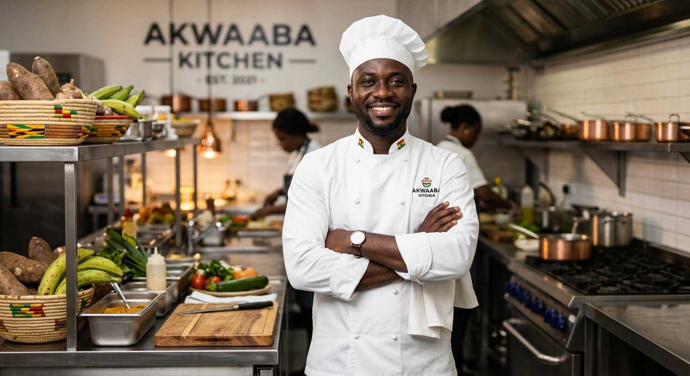

Founded in 2018 by Chef Kofi Asante and his wife Ama, Aroma Bistro began as a small neighborhood restaurant with a big dream: to create a space where people could gather to enjoy truly exceptional Ghanaian food in a warm, welcoming environment.
What started with just 12 tables has grown into one of the city's most beloved dining destinations. We believe that the best meals are made with love, patience, and the highest quality ingredients.
Every dish on our menu reflects our commitment to craftsmanship. We work closely with local Ghanaian farmers and fishermen to ensure every ingredient is at its peak freshness and flavor.
We don't just serve meals — we craft experiences rooted in Ghanaian heritage. From the first bite of jollof to the last taste of bofrot, every detail is thoughtfully considered to create moments you'll remember long after you leave.
We change our menu with the seasons, highlighting the best produce available from nearby farms and producers.
We honor classical techniques while embracing modern creativity in everything we prepare.
From the moment you walk in, you're part of our family. Excellent service is as important as great food.

With over 20 years in professional kitchens, Chef Kofi brings deep knowledge of traditional Ghanaian cuisine and modern techniques to every plate.
Ama ensures every guest feels at home while overseeing the restaurant's operations and warm atmosphere.
Nana Yaa creates our unforgettable traditional and modern Ghanaian desserts with creative flair.
This static website was built by a small team of passionate developers and designers.
Led the entire project and was responsible for building and structuring the About page with rich storytelling and team sections.
Designed the overall visual layout, color scheme, and ensured the site has a warm, appetizing foodie aesthetic.
Built the interactive menu grid, hero sections, and handled responsive design across all pages.
Wrote the dish descriptions, testimonials, and all engaging copy throughout the website.
Tested the site across devices, optimized performance, and added final touches and accessibility improvements.